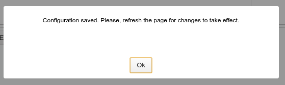

Toda interação que o usuário faz com cada banco de dados é registrada no Histórico SQL do OmniDB. Para acessá-lo, você precisa clicar no ícone do relógio no canto superior direito. OmniDB mostrará um pop-up com todas as ações em um página de grade.
Cada ação mostra a hora e a data em que começou, o tempo que terminou, a duração, o modo, o status e o comando. Como toda grade no OmniDB, você pode clicar com o botão direito no comando e clique em View Content (Exibir Conteúdo), onde outro pop-up irá abrir mostrando o conteúdo em um editor de texto maior.
Também no canto superior direito, clicando no ícone de engrenagem, o OmniDB irá abrir o pop-up User Settings (Configurações do usuário). É composto por duas abas: - User (Usuário): permite que o usuário altere sua senha. Mais configurações do usuário serão adicionadas no futuro. - Editor: permite ao usuário alterar o tamanho da fonte do Editor SQL e também altera todo o tema OmniDB. Há vários temas para OmniDB, cada um deles altera a cor de destaque de sintaxe do editor. Eles também são classificados em temas claros e escuros. Um tema leve é o padrão; um tema escuro mudará toda a interface do OmniDB.

Todas as alterações nas configurações do usuário exigem que você: - Atualize a página, se você estiver usando o OmniDB Server e a interface através de um navegador web; ou - Abra e feche o OmniDB, se você estiver usando o OmniDB-app.
